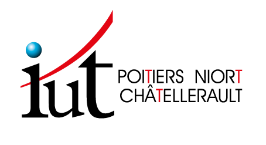
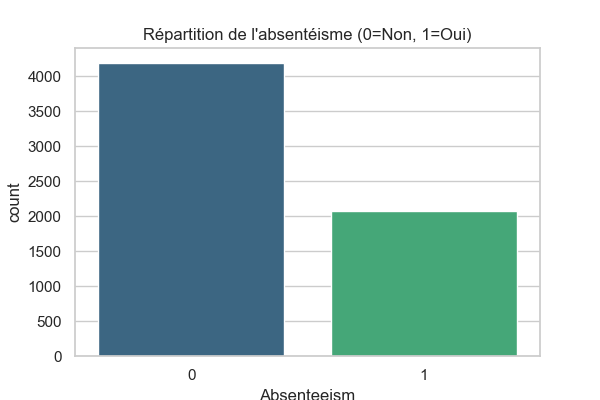
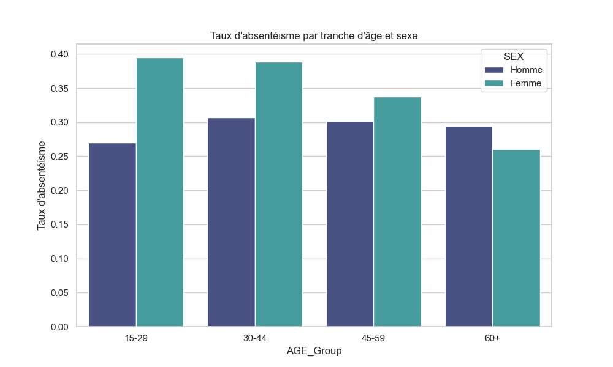
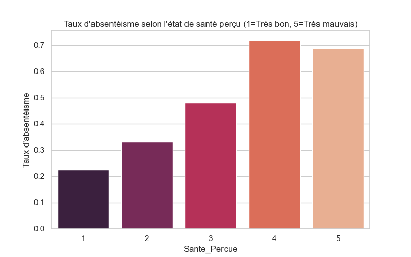
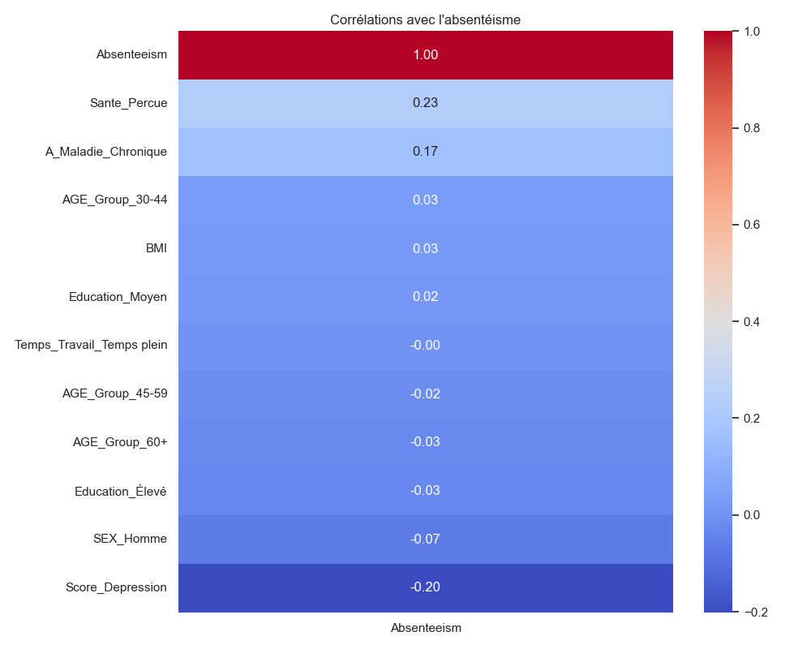
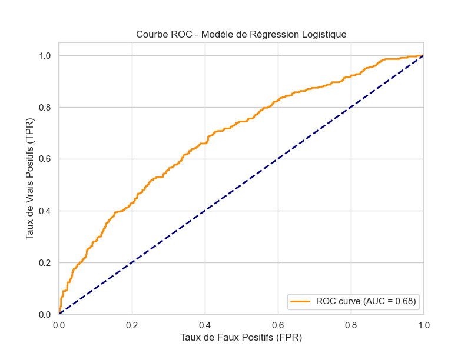

Analyse Prédictive et Modélisation Statistique par Régression Logistique
Exploitation des données de l'Enquête Européenne sur la Santé (EHIS) 2019
Alexandru Ioan Cuza University
Faculty of Economics & Business Administration
Exploitation des données de l'Enquête Européenne sur la Santé (EHIS) 2019

Dans un monde professionnel en constante mutation, la préservation de la santé au travail est devenue un enjeu majeur, tant pour le bien-être des individus que pour la performance des organisations. L’absentéisme pour raisons de santé représente non seulement un coût économique significatif, mais il est aussi le symptôme de conditions de travail parfois inadaptées. C’est dans ce contexte de santé publique et de statistiques appliquées que s’inscrit mon stage de deuxième année de BUT Science des Données, réalisé au sein de l’Université Alexandru Ioan Cuza (UAIC) à Iași, en Roumanie.
Affecté au laboratoire de recherche en économie et statistiques de la Faculté d'Économie et d'Administration des Affaires (FEAA), j’ai été chargé d’exploiter la troisième vague de l’Enquête Européenne sur la Santé (EHIS 2019). Cette base de données, riche de milliers d’observations à l'échelle européenne, permet d'étudier avec une grande finesse les comportements de santé et les facteurs de risques environnementaux et professionnels.
La mission qui m'a été confiée consiste à identifier et à modéliser les facteurs qui influencent la probabilité d'absence au travail pour raisons de santé. Pour répondre à cette problématique, le choix s’est porté sur la variable d'intérêt AW1 (« Absent from work due to personal health problems in the past 12 months »), qui constitue un indicateur direct de l'impact de la santé sur l'activité professionnelle.
L'objectif central de ce travail est de mesurer l'impact de divers facteurs (physiques, psychologiques, sociaux) sur le risque de recours à l'arrêt maladie. Pour isoler ces effets et obtenir des résultats statistiquement robustes, j'ai mis en œuvre une modélisation par régression logistique. Cette méthode permet non seulement de prédire la probabilité d'absence, mais surtout de quantifier le poids spécifique de chaque contrainte par rapport aux autres déterminants.
Ce rapport détaille ainsi la démarche suivie, de la phase critique de préparation et de nettoyage des données EHIS jusqu'à l'interprétation des résultats du modèle, en passant par l'analyse descriptive des populations concernées.
Située au carrefour de l'Europe centrale, orientale et balkanique, la Roumanie est une république membre de l'Union européenne depuis 2007 et de l'OTAN. Au-delà de son riche héritage culturel, le pays s'est imposé en deux décennies comme l'un des moteurs économiques les plus dynamiques d'Europe de l'Est.
Cette croissance est portée par un secteur technologique en pleine effervescence, souvent qualifié de « Silicon Valley de l'Europe orientale ». Bénéficiant d'infrastructures numériques performantes, la Roumanie a su attirer de nombreux centres de recherche et entreprises internationales de pointe. Ce dynamisme est soutenu par un système universitaire d'excellence qui forme une main-d’œuvre hautement qualifiée dans les domaines de l'ingénierie et de l'analyse de données.
Iaşi, située dans le nord-est de la Roumanie, est la deuxième ville la plus peuplée du pays avec plus de 316 000 habitants. Au-delà de son riche patrimoine culturel et religieux (ancienne capitale de la Moldavie), Iași est surtout reconnue comme un centre universitaire et économique majeur. Plus de 60 000 étudiants fréquentent les universités de la ville, dont l'Université Alexandru Ioan Cuza, l’une des plus prestigieuses du pays.
Fondée en 1860, l'UAIC est la plus ancienne institution d'enseignement supérieur de Roumanie. Forte de son prestige historique, elle accueille aujourd'hui environ 24 000 étudiants. L'UAIC se distingue par sa pluridisciplinarité, étant organisée en 15 facultés qui couvrent un large spectre allant des sciences exactes aux sciences humaines. Cette organisation en départements permet de favoriser la gestion des ressources et d'encourager les projets de recherche croisant différentes disciplines.
Au sein de l'UAIC, j'ai été affecté à la Faculté d'Économie et d'Administration des Affaires (FEAA), et plus précisément au sein de son laboratoire de recherche en économie et statistiques. Le laboratoire se consacre au développement de modèles économétriques et statistiques appliqués aux dynamiques socio-économiques, à la production d'analyses fondées sur la donnée pour l'aide à la décision, ainsi qu'au rayonnement de la recherche académique via des publications internationales.
L’état de santé des Européens étant l’une des principales préoccupations des États membres, la Direction de l’information et de la recherche en santé mène depuis 2002 l’enquête européenne sur la santé (European Health Interview Survey, EHIS), déployée tous les 5 à 6 ans. Elle vise à fournir un état des lieux précis de la santé des populations européennes. Son objectif principal est de recueillir des données harmonisées sur l’état de santé, les recours aux soins, les déterminants de santé ainsi que les caractéristiques socio-démographiques.
Afin de garantir une représentativité statistique optimale, la population cible se compose d'individus âgés de 15 ans et plus résidant dans des ménages privés. L'Institut National de Statistique a procédé à un tirage aléatoire stratifié, segmenté selon l'âge, le sexe et le milieu de résidence. Cette stratification permet de réduire significativement la variance des estimateurs et s’assure que les sous-populations sont représentées. Pour la régression logistique, il est indispensable d’avoir cet échantillon représentatif.
Les résultats ont été majoritairement collectés par un entretien en face-à-face assisté par ordinateur (CAPI), ou par téléphone (CATI) en raison de l’épidémie de COVID-19. Toutes les données ont été recueillies de manière strictement confidentielle et anonyme. Parmi les techniques employées pour empêcher toute réidentification, on retrouve la suppression de variables d'identification directes, le regroupement par classes, le plafonnement (« top coding »), et la généralisation par recodage.
L'enquête repose sur un principe de standardisation des intrants. Tous les États utilisent un questionnaire de base identique, articulé autour de quatre modules fondamentaux :
Mon analyse se dirige vers la cause de l’absentéisme au travail, défini comme l’absence temporaire d’un individu de son activité professionnelle en raison de problèmes de santé. La littérature met en évidence plusieurs dimensions clés :
Dans quelle mesure les comportements à risque (sédentarité, obésité, tabagisme) et l'état de santé globale (maladies chroniques, dépression) influencent-ils la probabilité d’avoir recours à un arrêt de travail ?
Pour répondre à cette question, l'utilisation d'un modèle de régression logistique est idéale, car notre variable cible (AW1) est binaire (Oui/Non). Ce modèle permet d'estimer la probabilité d'occurrence d'un arrêt de travail en fonction des variables explicatives tout en garantissant des probabilités comprises entre 0 et 1.
Afin de nettoyer la base de données, un filtrage a été effectué pour ne conserver que les personnes actives occupées (MAINSTAT = 10). Les modalités non pertinentes (-1, -2, -3 correspondant aux non-réponses) ont été supprimées. La base finale, avant modélisation, comprend ainsi un échantillon épuré prêt à l'emploi.
| Variable | Description Initiale | Nouvelles Modalités (Recodage) |
|---|---|---|
| AW1 (Cible) | Absent from work due to health problems | « Oui » / « Non » |
| SEX | Sexe du répondant | « Homme » / « Femme » |
| AGE | Âge du répondant | « 15-29 ans » / « 30-44 ans » / « 45-59 ans » / « 60+ ans » |
| HATLEVEL | Niveau d'éducation | « Faible » / « Moyen » / « Élevé » |
| HS1 | Santé perçue globale | Score de 1 (Très bon) à 5 (Très mauvais) |
| CD1O / CD1H | Dépression / Maladies Chroniques | « Oui » / « Non » (Agrégration des indicateurs) |
| BMI | Indice de Masse Corporelle (IMC) | Valeur numérique conservée, filtrée pour supprimer les valeurs aberrantes |
| FT_PT | Temps de travail | « Temps plein » / « Temps partiel » |
Avant d'entraîner le modèle, j'ai réalisé une exploration visuelle des données nettoyées pour mieux appréhender la distribution de notre variable cible selon différents axes.




Le modèle a été entraîné sur un sous-échantillon d'entraînement (80%) puis évalué sur un sous-échantillon de test (20%). Voici les performances globales :
Le rappel de 64.3% est particulièrement satisfaisant : il indique que le modèle parvient à identifier près des deux tiers des employés qui vont effectivement s'absenter, ce qui est l'objectif prioritaire en termes de prévention RH.

L'avantage majeur de la régression logistique est l'interprétabilité de ses coefficients. Les Odds Ratios (OR) permettent de quantifier le sur-risque (si OR > 1) ou la protection (si OR < 1) liés à chaque variable.
| Variable (Modalité) | Coefficient | Odds Ratio (OR) | Interprétation de l'Impact |
|---|---|---|---|
| Maladie Chronique (Oui) | +0.509 | 1.66 | Avoir une maladie chronique augmente de 66% le risque d'absentéisme. |
| Santé Perçue (Score) | +0.443 | 1.55 | Chaque palier de dégradation de la santé perçue augmente le risque de 55%. |
| Temps de Travail (Plein) | +0.116 | 1.12 | Le travail à temps plein augmente très légèrement le risque (+12%) par rapport au temps partiel. |
| Sexe (Homme) | -0.233 | 0.79 | Être un homme réduit le risque d'environ 21% (toutes choses égales par ailleurs). |
| Âge (60+) | -0.620 | 0.53 | Fait intéressant : les seniors de 60+ ans s'absentent nettement moins (risque réduit de 47%) que la tranche des plus jeunes. |
Conclusion Analytique : L'âge avancé n'est pas le premier facteur d'absentéisme, bien au contraire, il apparaît protecteur. Le véritable cœur du problème réside dans l'état de santé intrinsèque de l'employé (maladies chroniques et santé perçue), confirmant ainsi les hypothèses soulevées dans notre revue de littérature initiale.